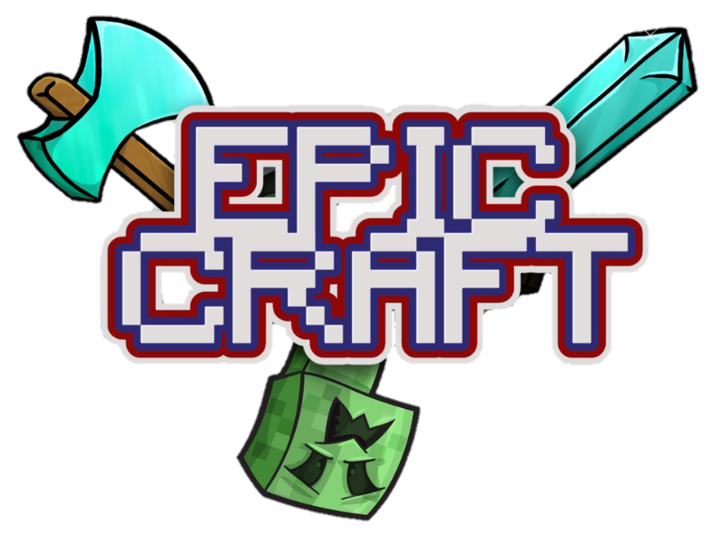

New weapons, bosses and ores for Minecraft 1.21.1
Swords that teleport you, throw fireballs or fire a Sonic Boom. A Vampire King in the Dark Forest. Two new metals to forge into armor with set bonuses.
Requires NeoForge 21.1 for Minecraft 1.21.1 and Java 21.
Available in English, Portuguese (Brazil) and Spanish (Spain).
What you'll find
Weapons, tools and materials from the mod. Hover or tap a slot to see what each one does.
Epic Craft
Three new threats
They spawn on their own. None of them appear on Mushroom Islands or in the Deep Dark.
-
Vampire King
Rare boss, Overworld. Most common in the Dark Forest.
200 health and a boss bar. Steals life, drains blood from range and teleports behind anyone who runs. Sunlight weakens him. Drops the Vampiric Dagger, and sometimes the Philosopher's Stone.
-
The Inventor
Overworld, at night or in the dark.
Carries the Inventor Wrench and shocks you with tesla bolts from a distance. One in five drops the wrench.
-
King Slime
Swamps.
A size-8 slime with 160 health that crushes everything when it lands from a jump. Splits into four slimes when it dies.
New ores
- Nezonita
- Anywhere in the Nether, Y 8 to 118, disguised as ancient debris.
- Tekynita
- Overworld, just above bedrock, Y −64 to −52.
- Ruby and Saphire
- Overworld, with deepslate variants.
Armor set bonuses
- Full Nezonita
- Strength II, +6 hearts and Fire Resistance.
- Full Tekynita
- Speed III, step up one block, 80% less fall damage and Fire Resistance.
- Philosopher's Stone
- The key to both metals. Use it instead of the netherite upgrade template at a smithing table to craft Nezonita and Tekynita ingots. It's a rare drop from the Vampire King, and you can duplicate it with 7 gold ingots and a block of redstone.
Download Epic Craft
Latest version: v2.0.0. Pick the site you already use; the file is the same everywhere.
Installing by hand
- Install NeoForge 21.1 for Minecraft 1.21.1 (Java 21 is required).
- Put the Epic Craft
.jarin yourmodsfolder. - Start the game with the NeoForge profile.
The mod follows your game language: English, Portuguese (Brazil) and Spanish (Spain) are included. Forge, Fabric and Quilt are not supported.